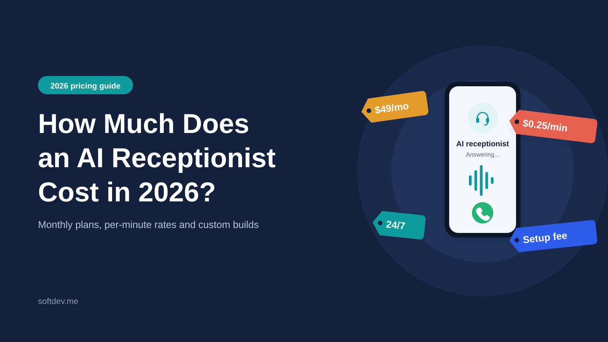
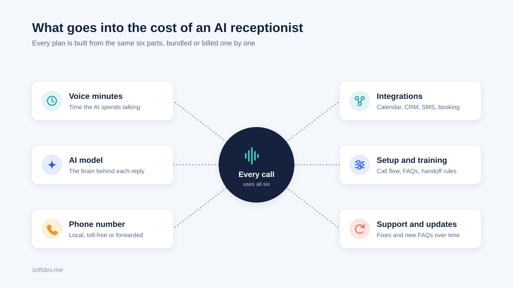
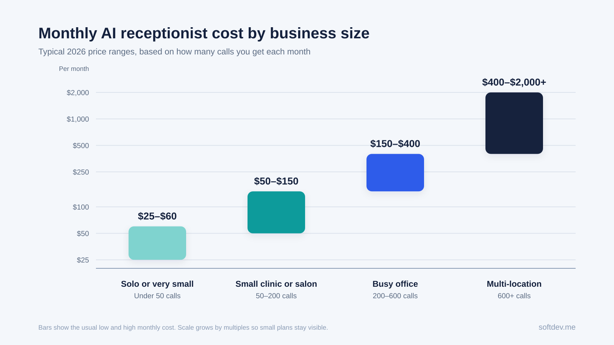
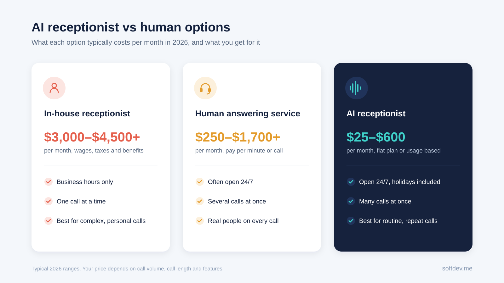
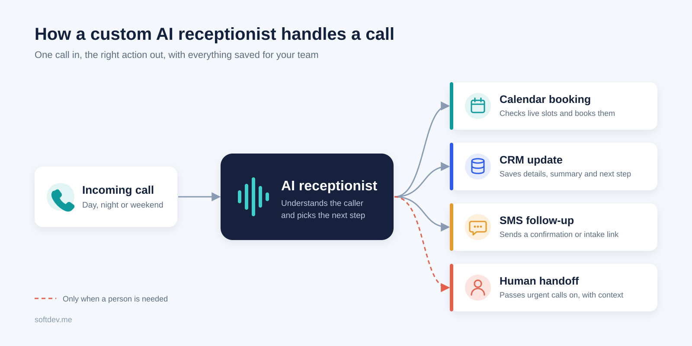

How Much Does an AI Receptionist Cost in 2026?
A simple breakdown of what businesses really pay for an AI receptionist in 2026, from monthly plans to per-minute pricing and custom builds.

TL;DR - 6 takeaways - 15-second read
- Most small businesses pay between $50 and $500 a month for an AI receptionist in 2026.
- Per-minute pricing usually lands between $0.10 and $0.50 per minute, depending on the voice and AI model.
- A custom AI receptionist built around your CRM and calendar often costs $1,500 to $10,000 to set up, plus monthly usage.
- Even at the high end, it costs far less than a full-time human receptionist.
- Hidden costs come from integrations, extra minutes, phone numbers, and ongoing updates.
- The real question is not the price per call. It is how many missed leads and manual tasks it removes.
Introduction
If you have your own clinic, an agency, a team of realtors, or any other business that provides services, you most likely know how many clients can be lost because of a simple missed call. A prospect calls, gets an answering machine, and tries the next company on Google.
This is why many businesses are now faced with the same question: how much does an AI receptionist cost? And there is no single answer, since everything depends on the average number of calls, the functions required, and the available integrations.
In this article, we have prepared a short overview of rates in 2026 — the ways of pricing, additional costs, and a simple calculation example.
What is an AI receptionist?
An AI receptionist is a virtual agent that answers your business phone, engages callers in a natural language conversation, and completes tasks. It can answer frequently asked questions, schedule meetings, qualify leads, take messages, and send a confirmation text or email after the conversation.
Think of it as your front desk receptionist, but it never takes a lunch break, works 24/7 (even on weekends and holidays), and can multitask by handling multiple calls at once.
It is not designed to handle every customer interaction, but rather to offload simple, high-volume interactions while reserving complex, delicate conversations for your team, with an option to deliver a summary of the conversation for their review.
What you are actually paying for
When you pay for an AI receptionist, you are not paying for one thing. You are paying for several small parts working together behind each call.
| Cost part | What it covers |
|---|---|
| Voice minutes | The time the AI spends talking on calls |
| AI model usage | The "brain" that understands the caller and decides what to say |
| Phone number | A local or toll-free number, or call forwarding from your current line |
| Integrations | Links to your calendar, CRM, SMS, or booking system |
| Setup and training | Writing the call flow, FAQs, and handoff rules |
| Support and updates | Fixing issues, adding new FAQs, and improving call quality over time |
Off-the-shelf tools bundle most of these into one monthly plan. Custom builds show them as separate line items. Either way, every AI receptionist price is made of these same building blocks.

AI receptionist pricing models in 2026
Most AI receptionist providers charge in one of four ways. Knowing which one you are on matters more than the headline price, because it decides what happens to your bill in a busy month.
| Pricing model | How it works | Typical 2026 price | Best for |
|---|---|---|---|
| Flat monthly plan with minutes | Fixed fee with a set number of minutes, then extra per minute | $29 to $200/month, then about $0.25 to $0.50 per extra minute | Small businesses with steady call volume |
| Per-minute | You pay only for the minutes used | About $0.12 to $0.50 per minute | Low or unpredictable call volume |
| Per-call or per-resolution | A fee for each call handled or solved | About $0.70 to $11.50 per call | Businesses with long, complex calls |
| Custom build | One-time setup fee plus monthly usage and support | $1,500 to $10,000 setup, then $100 to $1,000+/month | Businesses that need deep CRM, calendar, or routing logic |
Prices are based on published market rates as of October 2026.
Published plans from the big vendors currently run from about $29 to $599 a month (Aibrify, Oct 2026). Per-minute rates usually sit between $0.12 and $0.48 (TRTC), and per-call plans can go as high as $11.50 per extra call on some AI plans.
A quick tip: per-minute pricing looks cheap until you have a chatty caller who stays on the line for ten minutes. Per-call pricing looks expensive until your calls get longer. Always check which way your calls lean before picking a plan.
Typical costs by business size
Here is a simple way to estimate your own monthly cost based on how many calls you get.
| Business type | Calls per month | Typical monthly cost |
|---|---|---|
| Solo or very small business | Under 50 | $25 to $60 |
| Small clinic, salon, or local service | 50 to 200 | $50 to $150 |
| Busy office or multi-staff team | 200 to 600 | $150 to $400 |
| Multi-location or high-volume business | 600+ | $400 to $2,000+ |
Most small and mid-sized businesses land somewhere between $50 and $150 a month (My AI Front Desk). The jump from a $50 plan to a $300 plan is mostly about call volume and integrations, not how good the AI sounds.

Factors that affect the cost
Two businesses can buy the same AI receptionist and pay very different amounts. These are the things that move the number up or down.
Call volume. This is the biggest one. More calls mean more minutes, and more minutes mean a bigger bill on most plans.
Call length. A two-minute booking call costs far less than a ten-minute support call. If your callers like to talk, factor that in.
What the AI needs to do. Answering FAQs and taking messages is cheap. Booking appointments, checking live availability, qualifying leads, and sending follow-ups add cost because they need more logic and more connections.
Integrations. Connecting to Google Calendar is simple. Connecting to a practice management system, a custom CRM, or GoHighLevel with multiple pipelines takes more setup time.
Voice quality. Premium, human-like voices cost more per minute than basic ones. For most businesses a good standard voice is enough.
Languages. Supporting English plus Urdu, Arabic, or Spanish can add to both setup and usage cost.
Number of locations. Some vendors charge per location. A business with three branches may pay three times the base plan.
Compliance needs. Healthcare, legal, and finance often need call recording rules, data retention limits, and HIPAA or GDPR-friendly setups. That usually means a higher tier or a custom build.
AI receptionist vs human receptionist vs answering service
Most business owners are not comparing one AI tool to another. They are comparing AI to hiring someone, or to paying a human answering service. Here is how the three stack up.
| Option | Typical monthly cost | Hours covered | Calls at once | Best at |
|---|---|---|---|---|
| In-house receptionist | $3,000 to $4,500+ (wages, taxes, benefits) | Business hours only | One | Warm, in-person, complex conversations |
| Human answering service | $250 to $1,700+ (usually per minute or per call) | Often 24/7 | Several | Calls that need a human touch |
| AI receptionist | $25 to $600 | 24/7 | Many | Routine, repeated, high-volume calls |
An in-house receptionist costs around $3,168 a month in wages alone, which is roughly 18 times the price of a mid-range AI plan (Aibrify). Human answering services usually charge $1.50 to $5.00 per minute (Open.cx), so a busy month can get expensive fast.
That does not mean AI wins every time. A human is still better for upset customers, sensitive conversations, and high-value deals. The smartest setup for many businesses is a mix: AI handles the first answer and the routine calls, and a person handles what really needs a person.

Hidden costs most people miss
The price on the pricing page is rarely the full story. Watch out for these extras before you sign up.
- Overage fees. Go past your included minutes and you may pay $0.25 to $0.50 for every extra minute. A busy season can double your bill.
- Billing increments. Some vendors round every call up to the next 30 or 60 seconds. Lots of short calls add up.
- Phone numbers and SMS. Extra numbers, text messages, and call transfers are often charged separately.
- Integration fees. Connecting to your CRM or booking tool may need a higher plan or a one-time setup fee.
- Per-location pricing. Opening a second branch can mean paying for a second plan.
- Cleanup time. A cheap tool that writes messy notes or books wrong slots creates manual work for your staff. That time is a real cost, even if it never shows up on an invoice.
How to work out your ROI
You do not need a complicated spreadsheet. Start with three simple numbers: how many calls you miss each month, how many of those would become customers, and what one customer is worth to you.
Here is a simple example for a small clinic:
| Item | Number |
|---|---|
| Missed calls per month | 60 |
| Callers who would have booked | 1 in 5 (12 patients) |
| Average value per new patient | $150 |
| Revenue recovered per month | $1,800 |
| AI receptionist cost per month | $150 |
| Monthly gain | $1,650 |
In this example, the AI receptionist pays for itself many times over. And that is before counting the staff hours saved on answering the same questions and booking appointments by hand.
If one new customer is worth $500 or more to your business, even one extra captured call a week can cover a $300 monthly plan.
Off-the-shelf tool vs custom build
There are two main ways to get an AI receptionist. You can sign up for a ready-made tool, or you can have one built around your exact workflow.
| Feature | Off-the-shelf tool | Custom build |
|---|---|---|
| Upfront cost | Little or none | $1,500 to $10,000 |
| Monthly cost | $25 to $600 | Usage plus support, often $100 to $1,000+ |
| Setup time | Same day to a few days | One to four weeks |
| Call flow | Fixed templates | Built around your process |
| Integrations | Common tools only | Any CRM, calendar, or internal system |
| Ownership | Vendor controls it | You control the logic and data |
Off-the-shelf tools are great if you just need calls answered, messages taken, and simple bookings made. A custom build makes sense when you need multi-step routing, lead scoring, live lookups in your own system, or follow-ups across SMS, email, and your CRM.
For example, our MBR AI Receptionist project used multi-branch routing to qualify new leads, handle vendor calls, and send SMS and email follow-ups through n8n and Twilio. For Beth Psychiatry, we built a voice agent that handles patient intake, scheduling, and refill requests with real-time lookups in their practice system.

How to keep costs under control
A few simple habits can stop your AI receptionist bill from creeping up.
- Start with one call type, like after-hours calls or appointment booking.
- Keep the greeting and questions short. Shorter calls mean fewer minutes.
- Only collect the details your team actually uses.
- Pick a plan that matches your real call volume, not your best-case guess.
- Review a few calls every week and fix the spots where the AI gets stuck.
- Set clear handoff rules so long, complex calls go to a person early.
Is an AI receptionist worth it?
For most service businesses, yes. If you miss calls after hours, during lunch, or when your team is busy, an AI receptionist will usually pay for itself quickly.
It is less useful if you get very few calls, or if almost every call is complex and personal. In that case, a simple voicemail-to-text setup or a part-time human may be enough.
The right question is not "How cheap is each call?" It is "How many missed customers, delays, and manual follow-ups will this remove?"
Conclusion
In 2026, an AI receptionist costs most small businesses between $50 and $300 a month, with custom builds costing more upfront but fitting your process better. Compared with a full-time receptionist, it is a fraction of the price and it works around the clock.
Look past the headline price. Check how you are billed, what happens when you go over your minutes, and how well the tool connects to your calendar and CRM. Start small, measure the results, and grow from there.
Frequently Asked Questions
How much does an AI receptionist cost per month?
Most small businesses pay between $50 and $150 a month. Plans range from about $25 to $600 depending on call volume and features.
Is there a setup fee?
Many off-the-shelf tools have no setup fee. Custom AI receptionists usually have a one-time setup cost for building the call flow and integrations.
Is an AI receptionist cheaper than a human?
Yes, by a wide margin. A full-time receptionist often costs $3,000 to $4,500 a month, while most AI plans cost under $300.
Can I keep my existing phone number?
Yes. In most cases, calls are simply forwarded from your current number to the AI.
How long does it take to set up?
Simple setups can be live within 24 to 48 hours. Custom builds with deeper integrations usually take one to four weeks.